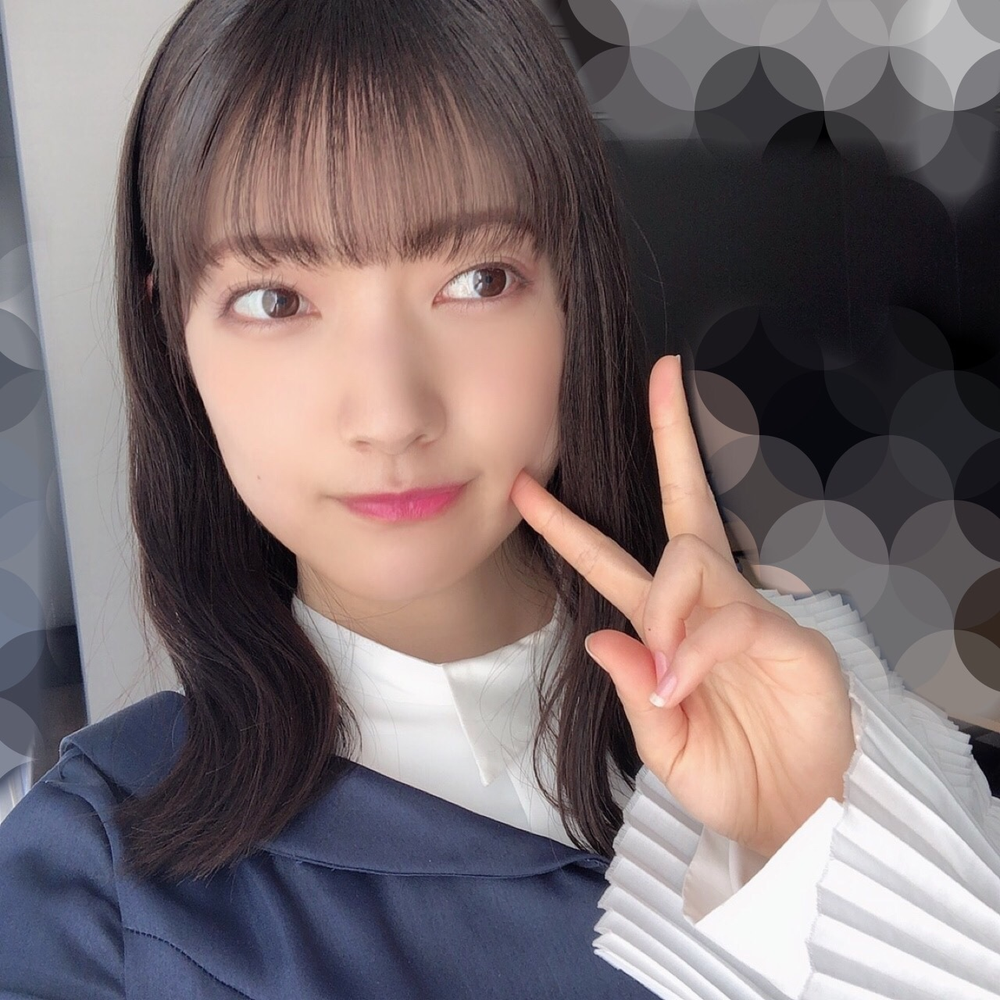
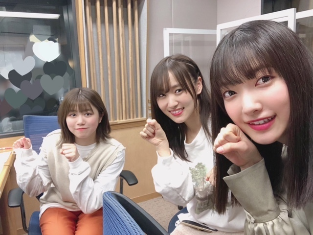
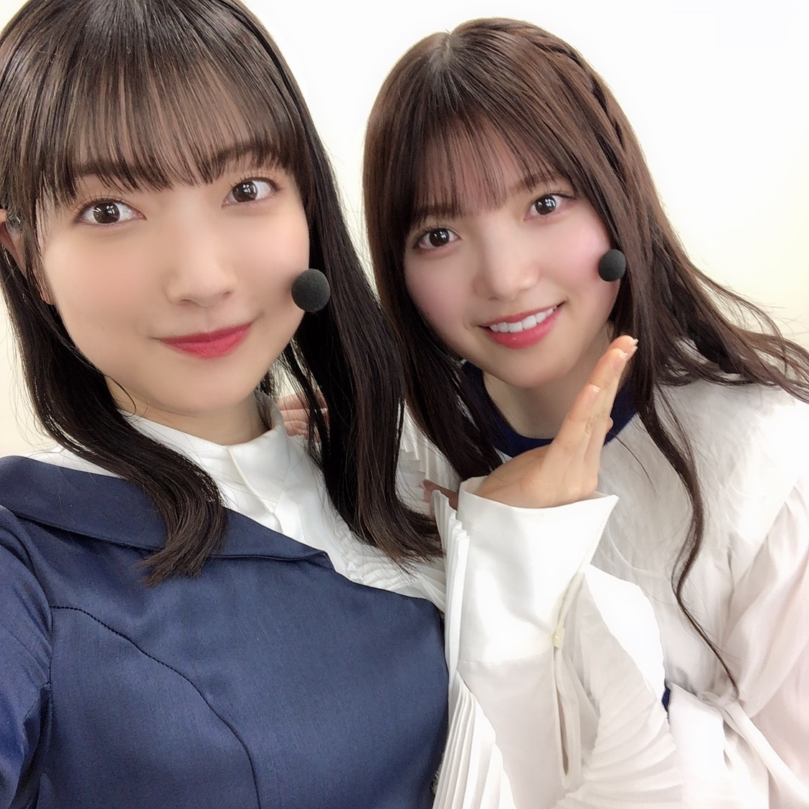
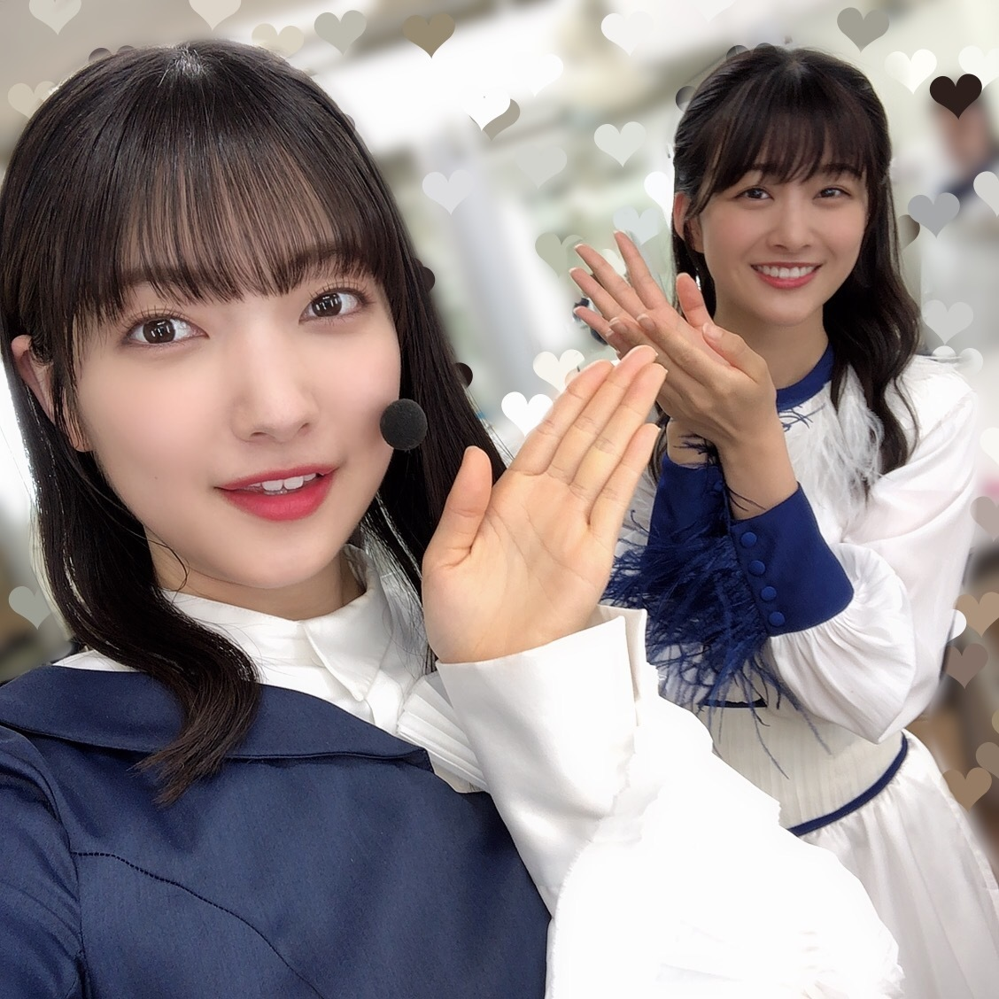
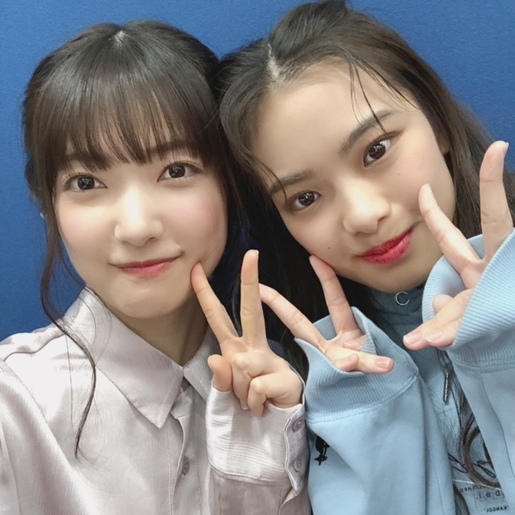
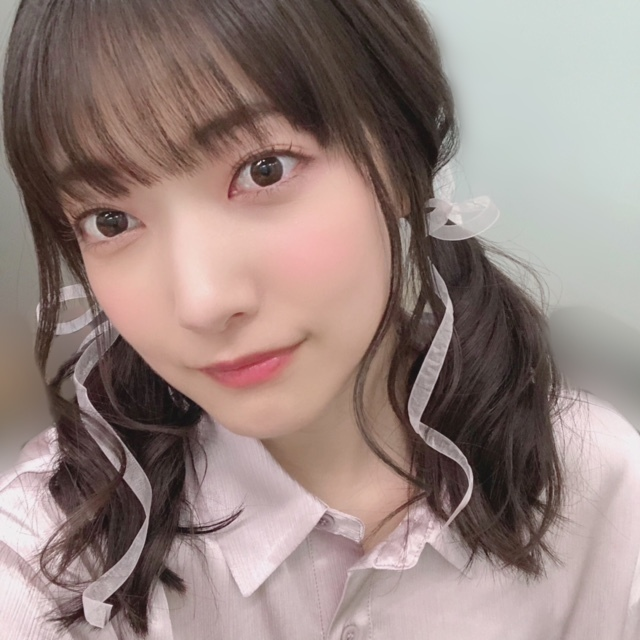
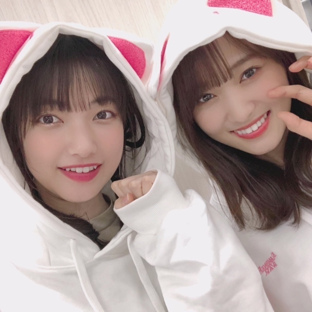
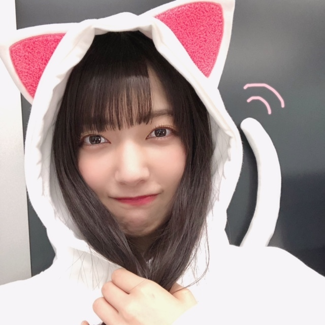
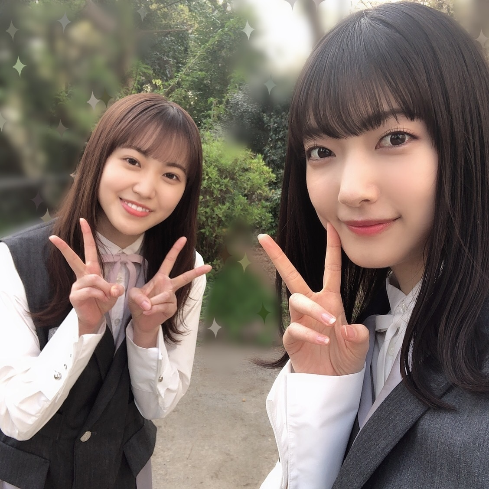

対の関係はいろんなところで成り立って
反対の存在がバランスを保っている
好きなことがあれば好きじゃないことがある
できることがあればできないことがある
気になって仕方ないこともあればまったく興味の湧かないこともある
忘れたくないこともあればまったく覚えられないこともある
あたたかい言葉があれば温度のない言葉もある
見えたり感じたり届いたりするもの
だけが存在することなんてなくて
必ず反対の存在がある
これが存在するなら反対も必ず存在する
これの存在は反対の存在を証明してくれている
そうやって反対の存在を思い出せたら
浮き浮きしすぎず
とらわれすぎず
広く
優しく
自分らしく
あれそうだ〜〜

上下反対から始まり、
「BAN」をフルサイズでパフォーマンスさせていただいた『CDTV！ライブ！ライブ！』さん✨
見てくださったみなさんありがとうございました！
反対、さくら、風、水
MVの逆再生や、出てくるものが詰まっていて嬉しかったです
パフォーマンスをするときに
2番の歌詞までまるごと届けたい
という思いはいつもあって、、
今回こうしてフルサイズでパフォーマンスできて、パワーの込められた演出をしてくださって本当にありがたいです
ありがとうございます！
ミッキーマウスマーチもとても楽しかったです🧀
気持ちがきらきらしました〜✴︎✴︎
急いで髪を乾かしていたら写真を撮りそびれました、、代わりにMVで濡れたときの、
水好き！
同日の夜は『レコメン！』さんに
友香さん、唯衣ちゃんと出演させていただきました✨
聞いてくださったみなさんありがとうございました！
とにかくず〜っと笑いっぱなしで楽しかったです〜〜
のりさん10周年記念のクリアファイル、大事にします✴︎

『SONGS OF TOKYO』さん
見てくださったみなさんありがとうございました✨
届けたいものを受け取ってくださる
世界中のみなさんに会いたいです


そして24日、25日のミーグリ
ありがとうございました✴︎
振替のご報告をくださる方もいて安心しました
必ず会いましょう〜〜！
次は5月、楽しみにしてます


サマナーズウォーさんのパ〜カ〜🐈⬛


現在発売中の『月刊エンタメ』さん
まつりちゃんとインタビューで登場してます✨
是非チェックしてみてください〜〜！

🧀🧀🧀🌸
大園玲